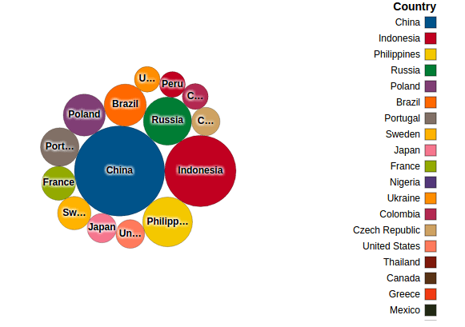

Etre capable de sortir une information abstraite d'un jeu de donnée est une première étape cruciale. Mais il est quasiment impossible d'analyser les données extraites de l'article précédent sans les visualiser correctement. Et je ne parle même pas de communiquer ces résultats.
Visualiser vos données correctement va vous permettre de creuser, de poser des questions pertinentes, d'obtenir des réponses et plus important, de les voir sous un éclairage nouveau.
Mais soyons honnêtes, il est rare d'avoir accès à un autre logiciel qu'Excel et ses diagrammes. C'est parfait pour la flexibilité que cela apporte, mais très limité et pénible si vous voulez faire des analyses récurrentes.
Dans certaines entreprises, vous pouvez avoir accès à des outils de Business Intelligence intégrés dans votre ERP ou à des outils plus sophistiqués comme Tableau ou Qlik.
Dans ce cas, je vous encourage grandement à commencer à les utiliser.
Pour ceux d'entre vous qui n'ont pas accès à de tels logiciels ou qui n'ont pas les autorisations nécessaires pour créer l'application dont vous avez besoin, continuons d'utiliser Jupyter Notebook.
L'avantage principal de Jupyter est sa flexibilité et la capacité à partager votre travail avec les autres facilement.
Vos "notebooks" peuvent être sauvegardés soit localement soit sur le réseau de votre entreprise, du moment que vous avez les autorisations nécessaires pour accéder au dossier partagé.
Créez un "notebook" partageable
Avant de partager quoi que ce soit, créons un nouveau "Notebook" dans Jupyter.
Nous allons d'abord insérer le code de notre programme 'semanticAnalysis'.
La première cellule va contenir les librairies et les données sources à importer:
Comparé à notre programme initial, les changements suivants ont eu lieu:
- On importe désormais une nouvelle librairie nommée "Brunel" - Ne vous inquiétez pas, on va en parler dans un moment.
- La liste des mots à chercher a été allongée (toujours générée aléatoirement sur Mockaroo).
- Le fichier source "MOCK_DATA.csv" a été aussi complété avec l'addition de quelques milliers de lignes de données et deux nouvelles colonnes: 'country' et 'city'.
Lancer la première cellule permet de vérifier que les données ont été correctement lues par le "notebook" en imprimant les 5 premières lignes à l'écran.
Dans la seconde cellule, nous pouvons ajouter le reste de notre code pour générer un "dataframe" et le fichier contenant les résultats de notre analyse.
La seule différence ici est l'ajout des pays et des villes de chaque commercial dans notre fichier de résultats.
Exécutez le code de la cellule, les 5 premières lignes de votre résultat devraient être imprimées dans votre "notebook".
Comme prévu, le fichier 'analysisResults.csv' a également été généré.
Visualisez vos données
Puisque que nous avons généré les données nécessaires à notre analyse, creusons un peu désormais.
Notre but était initialement de trouver toutes les occurences de mots à caractère injurieux au sein de notre base de données. Cela devait permettre de la nettoyer avant qu'un audit ne mette à jour le manque de considération de nos commerciaux pour nos prospects ou clients.
La première étape nous a donné une liste d'entrées dans la base de données et leur id correspondants, ainsi qu'une liste de commerciaux à contacter pour effectuer le nettoyage.
Nous pouvons simplement envoyer un email à chaque personne dans cette liste pour leur demander de modifier les commentaires incriminés. Cela serait une décision efficace à court terme mais ne réglerait pas le problème à long terme.
Nous avons besoin d'analyser l'étendue du problème et finalement prévoir des formations spécifiques sur l'éthique pour les personnes ne se conformant aux règles actuelles.
Visualisons nos données grâce à Brunel, une librairie puissante et simple à utiliser qu'IBM a passé open-source il y a quelques mois.
Brunel peut être installée localement et peut être intégrée à Jupyter Notebook pour que vous puissiez rester dans votre notebook pour la totalité de votre analyse.
Cliquez ici pour voir comment l'installer ou les autres manières de l'utiliser.
Il peut être intéressant de commencer par regarder la répartition mondiale de nos résultats pour avoir une idée de l'ordre de priorité à donner à nos efforts.
%brunel data('exportFile') bubble color(country) size(words) label(country) sort(words) count(words) legends(none) tooltip(#count)
Le résultat devrait être:
Notre jeu de données de test (genéré aléatoirement), montre qu'un nombre significatif de violations de notre réglement intérieur a eu lieu dans une quinzaine de pays seulement.
Nous devrions sûrement concentrer nos efforts sur ces pays en premier, mais combien de personnes devrions nous former dans ce cas ?
Regardons donc uniquement les 15 premiers pays et voyons combien il faudrait former de commerciaux pour chaque pays:
%brunel data('exportFile') bubble top(words:15) count(words) size(words) label(country) count(last_name) color(country) sort(last_name) tooltip("Sales: ", last_name)

Et si nous voulions voir la répartition par genre dans chaque pays pour observer une éventuelle différence ?
%brunel data('exportFile') bubble color(country) size(words) label(country) sort(words) count(words) legends(none) tooltip(#count) interaction(select) | x(gender) y(#count:root) color(gender) bar transpose tooltip(#count) legends(none) interaction(filter)
Désormais, chaque fois que vous cliquez sur un pays, vous avez la différence entre les hommes et les femmes.

Finalement, nous pourrions vérifier les noms des commerciaux qui ont enfreint le plus les règles dans chaque pays - Dans ce test, nous avons les mêmes noms plusieurs fois car la base de données contient beaucoup d'homonymes.
%brunel data('exportFile') bubble color(country) size(words) label(country) sort(words) count(words) legends(none) tooltip(#count) interaction(select) | x(gender) y(#count:root) color(gender) bar transpose tooltip(#count) legends(none) interaction(filter) | cloud color(city) label(last_name) size(words) count(words) sort(words) legends(none) interaction(filter) style('font-size:200px, font-family:Impact') :: height=800, width=1000
Cela devrait vous créer un petit "dashboard" pour vous aider à prendre vos décision ou pour communiquer en interne.
Vous pouvez trouver les données utilisées dans cet article sur github si vous voulez jouer avec.
N'hésitez pas non plus à me partager vos propres visualisations ou Jupyter Notebooks.